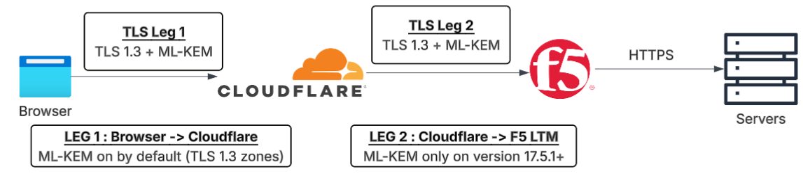

Network Architecture & Verification
Knowing which algorithms are quantum-safe is only part of the work. The harder question is where in the network you can actually deploy them, and where you can't. This section covers what you can control in a standard enterprise stack, what you cannot, and how to verify what is actually being negotiated.
What the Organisation Can and Cannot Control
ML-KEM is available. The question is: available where, and to whom?
The honest answer is: you can control your own TLS termination points. If your organisation runs Cloudflare, F5 BIG-IP, or a similar edge that you configure, you can enable ML-KEM there. You can verify it is negotiating. You can measure the gap between what you have and what you want.
What you can't control is the outbound path. Specifically, any TLS session initiated from inside your network to a third-party endpoint. SaaS applications, partner APIs, vendor portals, cloud services your users connect to directly. If PII or sensitive data flows from your network to those endpoints, the TLS negotiation happens between your user's device (or your outbound proxy) and a server you don't own. Whether that session uses ML-KEM is entirely the vendor's decision. You can't configure it. You can only ask them where they're on their roadmap.
The Architecture: Two TLS Legs
For traffic coming into the organisation (inbound HTTPS to your published services), there's no single TLS tunnel from the user's browser all the way to the backend. TLS terminates and re-originates at each inspection or routing point. In a standard CDN plus load balancer setup, that means two separate TLS legs, each independently configured, each with its own ML-KEM status. Getting Leg 1 right does not automatically fix Leg 2.

Vendor PQC Status
| Component | TLS Leg | ML-KEM Status | Notes |
|---|---|---|---|
| Cloudflare Browser → CF Edge (External) |
Leg 1 | Default ON | X25519MLKEM768 enabled for all TLS 1.3 zones. No configuration needed. |
| Cloudflare → Origin CF Edge → F5 |
Leg 2 (CF side) | Configurable | Default: supported (adds HelloRetryRequest round-trip). Set to preferred via API for best performance.PUT /zones/{id}/cache/origin_post_quantum_encryption |
| F5 BIG-IP LTM Client SSL Profile |
Leg 2 (F5 side) | Requires 17.5.1+ | TMOS 17.5.1 (June 2025) minimum. Cipher: SecP256r1ML-KEM-768. TLS 1.3 must be enabled. |
F5 BIG-IP Configuration
GUI Path
Local Traffic → Profiles → SSL → Client
→ Configuration: Custom
→ Ciphers: add SecP256r1ML-KEM-768
→ TLS 1.3: Enabled
TMSH (Command Line)
tmsh modify ltm profile \
client-ssl <name> \
ciphers "DEFAULT:\
+SecP256r1ML-KEM-768" \
options { no-tlsv1 \
no-tlsv1-1 }
Getting OpenSSL 3.5+
Worth flagging upfront: a common error when verifying ML-KEM negotiation from the command line
looks like a server problem but is entirely a client problem.
The openssl s_client command needs OpenSSL 3.5.0+ to even know what
X25519MLKEM768 is. Older versions refuse with a hard error, and depending on your
shell and OS, you might be running an older version than you think.
Call to SSL_CONF_cmd(-groups, X25519MLKEM768:x25519) failederror:0A080106 ... group 'X25519MLKEM768' can't be setThe server is fine. The
openssl binary in your PATH is too old or it's the wrong one.
Step 1: Which openssl are you actually calling?
Check your binary and version
which openssl openssl version
You need 3.5.0 or later.
Check available PQ groups
openssl list -tls-groups | grep MLKEM
Note: openssl list -groups returns
nothing in OpenSSL 3.5. It's a different command. Always use -tls-groups.
Step 2: Fix by platform
🪟 Windows: Git Bash (MinGW64)
Good news: Git for Windows already ships with OpenSSL 3.5.x in MinGW64. The catch is you have
to run your commands in Git Bash, not PowerShell or CMD. In PowerShell, the
openssl command resolves to something older from C:\Windows\System32.
Same command, completely different binary.
# Confirm you are in Git Bash with the right binary which openssl # should show: /mingw64/bin/openssl openssl list -tls-groups | grep MLKEM
🐧 Ubuntu / WSL
Ubuntu ships OpenSSL 3.0.x, which is too old. You need to build 3.5.0 from source. The important
thing is the -Wl,-rpath flag. Without it, the binary builds fine but fails at
runtime because it picks up the system's old libraries instead of its own. That error is
confusing until you know why.
# Install build dependencies sudo apt install -y build-essential wget # Download OpenSSL 3.5.0 source wget https://github.com/openssl/openssl/releases/download/openssl-3.5.0/openssl-3.5.0.tar.gz tar xzf openssl-3.5.0.tar.gz && cd openssl-3.5.0 # Configure with rpath. This is the important part ./Configure --prefix=/usr/local/openssl35 \ --openssldir=/usr/local/openssl35 \ -Wl,-rpath,/usr/local/openssl35/lib64 make -j$(nproc) && sudo make install # Verify /usr/local/openssl35/bin/openssl version
🔧 Already built without rpath? Use LD_LIBRARY_PATH
# Add a shell function to ~/.bashrc cat >> ~/.bashrc << 'EOF' openssl35() { LD_LIBRARY_PATH=/usr/local/openssl35/lib64 \ /usr/local/openssl35/bin/openssl "$@" } EOF source ~/.bashrc openssl35 version # should show OpenSSL 3.5.0
Running the Verification
Once you have a working OpenSSL 3.5+ binary, the command is the same everywhere.
The line to look for in the output is Negotiated TLS1.3 group: X25519MLKEM768.
openssl s_client \ -connect your-hostname:443 \ -tls1_3 \ -groups "X25519MLKEM768:x25519" \ -CAfile /etc/ssl/certs/ca-certificates.crt \ -brief
| Output Line | What it Means |
|---|---|
Negotiated TLS1.3 group: X25519MLKEM768 |
ML-KEM negotiated. Post-quantum key exchange is active |
Negotiated TLS1.3 group: x25519 |
Classical only. Server doesn't support ML-KEM or it's not configured |
Verification error: unable to get local issuer certificate |
Harmless. Custom OpenSSL build lacks CA bundle. Add -CAfile /etc/ssl/certs/ca-certificates.crt |
group 'X25519MLKEM768' can't be set |
Wrong binary. You are calling OpenSSL older than 3.5.0. See Step 1 above |
Protocol version: TLSv1.3Ciphersuite: TLS_AES_256_GCM_SHA384Negotiated TLS1.3 group: X25519MLKEM768Through F5 Distributed Cloud on the same domain, the negotiated group was
x25519.
TLS 1.3, but classical only. Same domain, same protocol version, different algorithm in the
key_share slot. That's the entire quantum gap.